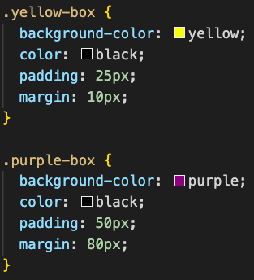

Woah, what the hell is even this? Well let me explain. Margin is essentially the gap between a border and the surrounding elements. The higher value of a margin the bigger the gap and vice versa. See how the purple box has more gap between the box and the border than the yellow box and is larger than the yellow box? I increased the value of margin and padding for the purple box and decreased the value of margin and padding for the yellow box. This is how I did it:
If you don't know what a border ss, let pictures explain:

Here is Moo, a cat that's touching his knees while dreaming about the brunch he had earlier on. Moo on the left has a solid blue funky border around him whereas Moo on the right has a double round orange border around him. Border property in CSS can manipulate width, style, color, radius, etc. This is how I coded Moo's borders: